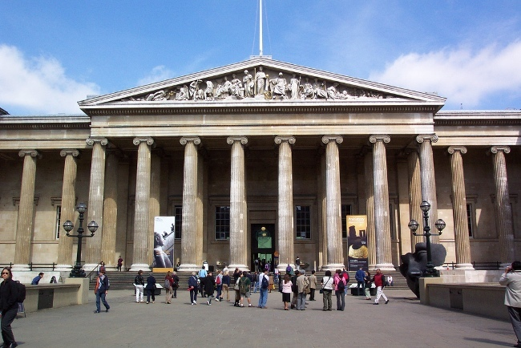

MUSEOS DEL MUNDO
Museo del Louvre (París, Francia)
El Museo del Louvre es uno de los más importantes y visitados del mundo. Antiguamente fue un palacio real y hoy es sede de una de las colecciones de arte más completas de la historia. Entre sus obras más célebres destacan la Mona Lisa de Leonardo da Vinci, la Venus de Milo y la Victoria de Samotracia. Es un espacio que combina historia, arquitectura y arte universal.

Metropolitan Museum of Art (Nueva York, Estados Unidos)
El Metropolitan Museum of Art, conocido como el “Met”, es uno de los museos más grandes del mundo. Su colección incluye más de dos millones de piezas que abarcan prácticamente todas las culturas y épocas: desde arte egipcio y griego, hasta pintura europea, arte americano, asiático y contemporáneo. Es un lugar que refleja la diversidad y riqueza cultural de la humanidad.
_-_Central_Park,_NYC.jpg)
Museo del Prado (Madrid, España)
El Museo del Prado es la principal pinacoteca de España y una de las más prestigiosas del mundo. Su colección está centrada en la pintura europea de los siglos XVI al XIX, con obras maestras de artistas como Velázquez, Goya, El Bosco, Rubens y Tiziano. Es considerado un lugar imprescindible para comprender la evolución del arte occidental.
Museo Británico (Londres, Reino Unido)
El Museo Británico es famoso por su inmensa colección de antigüedades y objetos históricos provenientes de todo el mundo. Entre sus piezas más destacadas se encuentran la Piedra Rosetta, los mármoles del Partenón y una amplia muestra del antiguo Egipto. Es un espacio que invita a recorrer la historia de la humanidad a través de sus civilizaciones más influyentes.

Museo Egipcio de El Cairo (Egipto)
El Museo Egipcio de El Cairo es el principal custodio del legado faraónico. Su colección alberga más de 120 mil objetos, entre los que destacan el tesoro de Tutankamón, momias reales, joyas y esculturas monumentales. Este museo es clave para comprender la cultura, religión y vida cotidiana del antiguo Egipto.

Ir al Formulario.